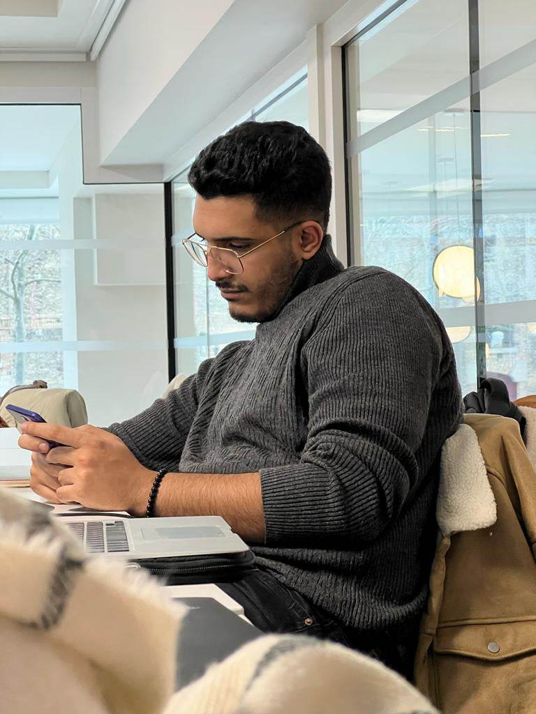
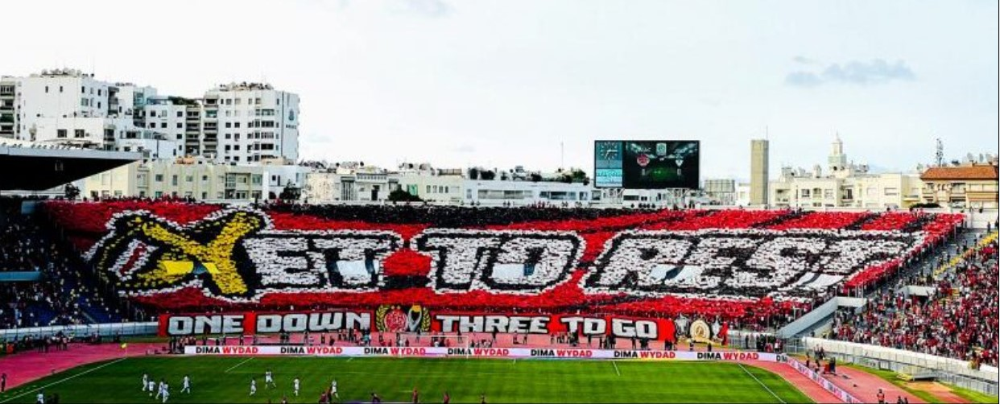
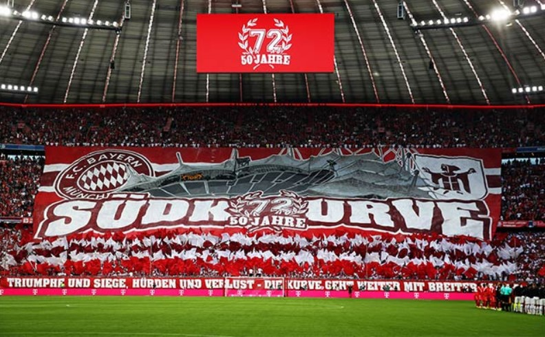

Hello, I'm Othman 😎
Je suis passionné par le Football inter-continentale🌍
Discover who is OthmanWAC - WYDAD ATHELETIC CLUB
Le Wydad Athletic Club appelé aussi Wydad AC ou WAC est un club marocain de football fondé le 19 juin 1939 à Casablanca. C'est la section football du club omnisport homonyme créée en 1937. Le WAC est un des trois clubs du championnat marocain n'ayant jamais connu la relégation. Le club a remporté 22 titres nationaux, 9 Coupes du Trône et 7 Supercoupe du Maroc, devenant le club le plus titré au Maroc. Dans les compétitions africaines, le WAC remporte trois Ligue des champions de la CAF, une Coupe des vainqueurs de coupe et une Supercoupe. Le club dont les couleurs sont le rouge et le blanc entretient une rivalité avec le Raja CA, cette confrontation est connue sous le nom de Derby de Casablanca. Le WAC a aussi une section de football féminin depuis 2002, ainsi qu'une section de futsal et une section de beach soccer créées en 2022.
Bayern Munich
Le Bayern Munich (Fußball-Club Bayern München e.V.) est un club omnisports allemand fondé le 27 février 1900 et basé à Munich, en Bavière. L'équipe joue depuis 1965 en Bundesliga et est surnommée Rekordmeister (en français : « Détenteur du record de titres »)3, il est le club européen le plus titré du 21e siècle (2e au monde).
REAL MADRID
Le Real Madrid Club de Fútbol, plus connu sous le nom de Real Madrid ou simplement Real, est un club professionnel espagnol de football, basé à Madrid. Vainqueur de très nombreux titres nationaux et internationaux, il a reçu de la Fédération internationale de football association (FIFA) le titre honorifique de plus grand club du xxe siècle.